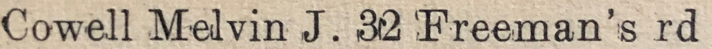
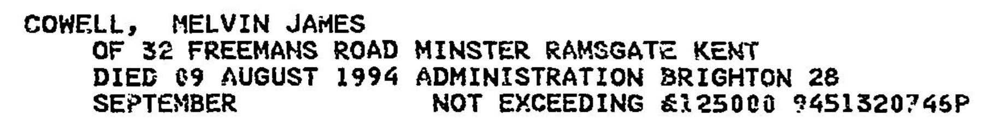
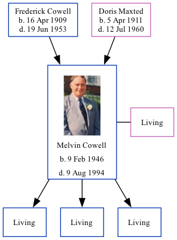

Melvin James Cowell 1946 - 1994
[ Home ] | [ Calendar ] | [ Surnames Index ] | [ Family History ]The twin brother of Maureen Joyce and the son of Frederick Cowell (a truck driver) and Doris Maxted, Melvin Cowell, a cousin on the mother's side of Nigel Horne, was born in Thanet, Kent, England on Feb 9, 19461,2,3 along with his twin sister Maureen Joyce and. He was orphaned at the age of 14 following the death of his father in 1953 and mother in 1960.
He married Linda Carter (with whom he had 3 surviving children Mark James, Graham Edward and Leigh Robert) at Ramsgate Register Office, Ramsgate, Kent, England around Nov 19675 In 1974, he lived on 32 Freeman's Road, Minster in Thanet6.
He died on Aug 9, 1994 in Greenwich, London, England3,4 (throat Cancer) and was buried on Minster Cemetery, Tothill Street, Minster in Thanet after Aug 9, 1994.
Parents
- Frederick James was born on Apr 16, 1909
- Doris Annie Minnie was born on Apr 5, 1911
Citations
- England & Wales deaths 1837-2007 - Findmypast
- England & Wales, Birth Index: 1916-2005 Online publication - Provo, UT, USA: The Generations Network, Inc., 2008.Original data - General Register Office. England and Wales Civil Registration Indexes. London, England: General Register Office. © Crown copyright. Published by permission of the Cont
- England & Wales, Death Index: 1984-2005 Online publication - Provo, UT, USA: The Generations Network, Inc., 2007.Original data - General Register Office. England and Wales Civil Registration Indexes. London, England: General Register Office. © Crown copyright. Published by permission of the Cont
- England & Wales Government Probate Death Index 1858-2019 - Findmypast
- England & Wales, Marriage Index: 1916-2005 Online publication - Provo, UT, USA: The Generations Network, Inc., 2009.Original data - General Register Office. England and Wales Civil Registration Indexes. London, England: General Register Office. © Crown copyright. Published by permission of the Cont
- 1974 Kelly's Thanet Directory
Media
Melvin James Cowell - headstone
1974 Kelly's Thanet Directory

East Kent Times and Mail - 5 Jan 1968

Melvin James Cowell (2)

Melvin James Cowell - Probate

England & Wales marriages 1837-2008 - BMD/M/1967/4/AZ/000243/050
England & Wales births 1837-2006 - BMD/B/1946/1/AZ/000273/139
England & Wales deaths 1837-2007 - BMD/D/1994/8/80091830
England Billion Graves cemetery index Transcription - US-BMD-BILLION-009058794
England & Wales Government Probate Death Index 1858-2019 - GBOR/GOVPROBATE/C/1994-1994/00048877
Family Tree
Generated by Ged2Site. Last updated on Jul 20, 2025